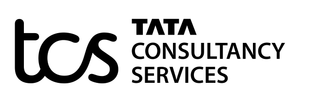
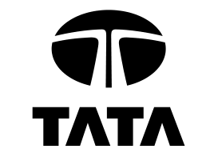

Skills SDD: un equipo de especialistas de IA que construye solo lo que el desarrollador aprueba
SDD (desarrollo guiado por especificación): primero se escribe y se aprueba qué se va a construir. Después se construye.
Una skill, un especialistaHace una sola tarea, siempre igual, y sabe qué recibe y qué entrega.
Se activa solaEl asistente lee el pedido del usuario y el estado del trabajo, y elige la skill adecuada.
Se detiene cuando importaEn los puntos clave espera a una persona. Nada importante pasa sin OK.

1TCS confidential
